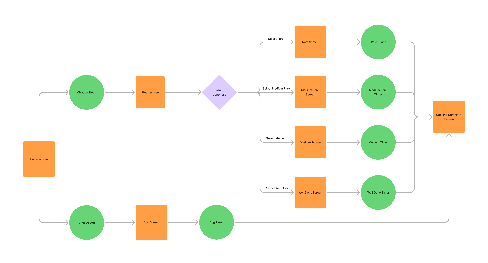
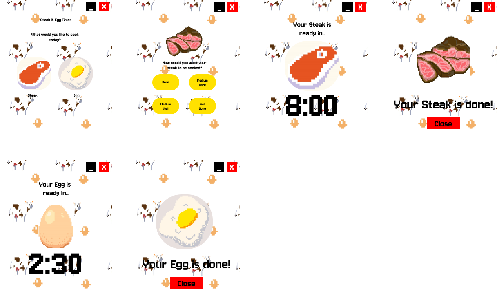
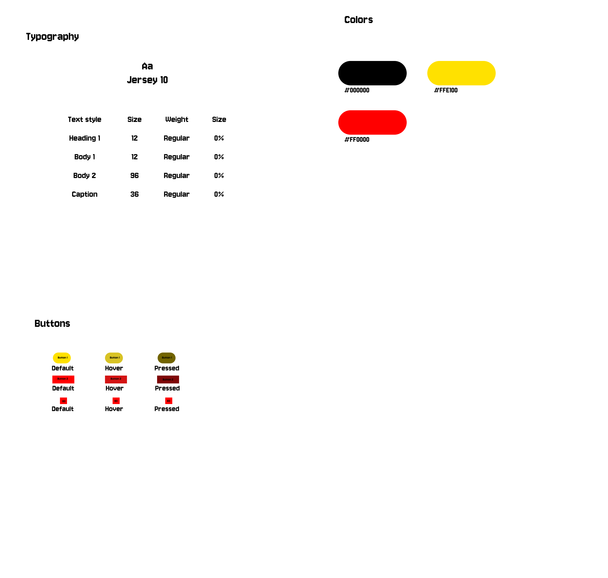

(UI/UX Project) Steak & Eggs Timer
Context
UI project for a Steak & Eggs cooking timer
Role
Designed the UI, Conducted user research and Wireframing
Timeline
Project completed in 3 days, inclusive of design.
Flow Chart
Application's Flow Chart
WireFrame
Creation of the wireframe
Style guides: Comprising of typography, colors and components
Reflections
Project Achievements
I was able to successfully create the UI for a Steak & Eggs Timer by designing an intuitive and functional user interface. I developed a wireframe and flowchart to outline the application's structure, ensuring a clear and logical user flow. The design incorporated key features such as customizable timers, choice for doneness levels, and a user-friendly layout. Despite having only three days, I effectively prioritized the UI/UX design to deliver a structured and visually appealing interface.
Take Aways
This project reinforced the importance of time management and prioritization, as I had to focus on the core UI elements due to the limited timeframe. I gained valuable experience in wireframing and flowcharting, which helped me establish a solid foundation for application development. Additionally, this project highlighted the need for a structured development roadmap to transition from UI design to implementation smoothly. It also strengthened my UI/UX design skills, enhancing my ability to create intuitive and user-friendly interfaces.